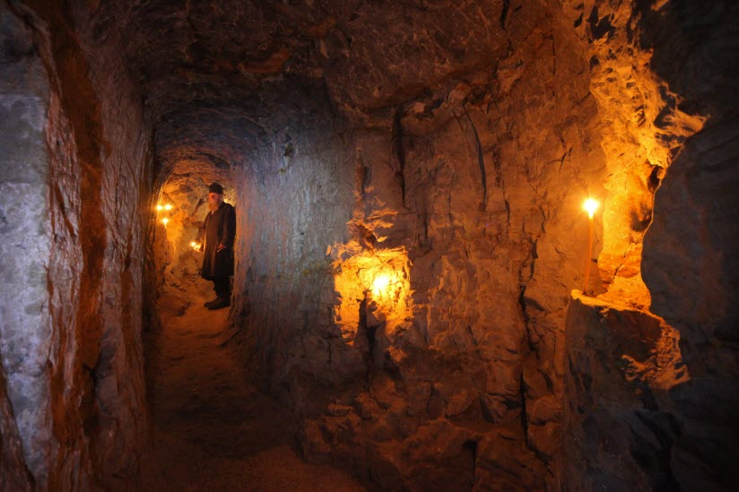
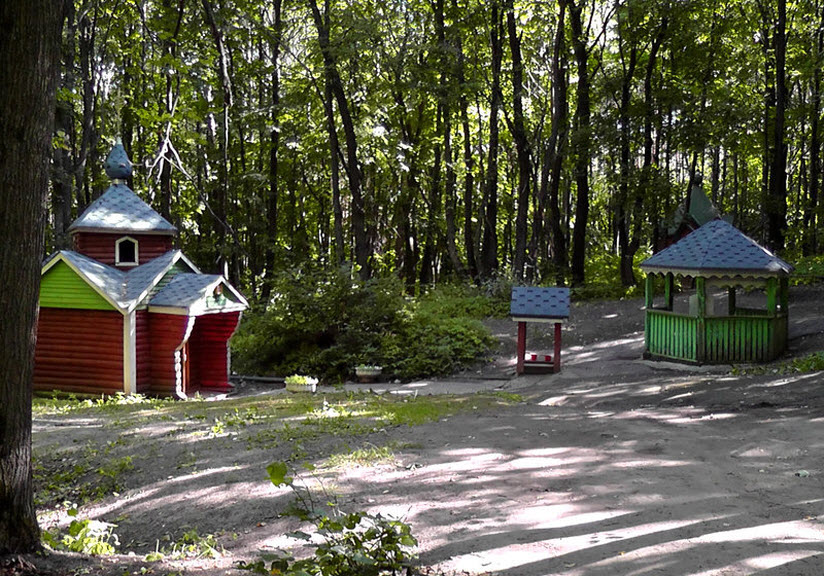

В древнее селе Сканово Наровчатского района туристы и паломники едут, чтобы в первую очередь посмотреть на уникальный пещерный комплекс, в котором столетия назад был основан православный мужской монастырь. Подземные тоннели скрыты в недрах Плодской горы, их общая протяженность превышает 630 метров, хотя еще сто лет назад она составляла 2,5 километра. Комплекс состоит из пяти ярусов, в первых трех расположены каменные кельи.
АдресНаровчатский пещерный монастырь

Наровчатский святой источник

На территории Сканова монастыря, в глубине Плодской горы, спрятано от людских глаз пресное озеро, из которого на поверхность земли вытекает чистый родник. Ключ был освящен в честь преподобных Антония и Феодосия Печерских. После того как была восстановлена Троице-Сканова обитель, над почитаемым источников возвели деревянную часовню-купель с двумя входами. Туристы могут набрать святой воды из колодца возле часовни.
Адрес